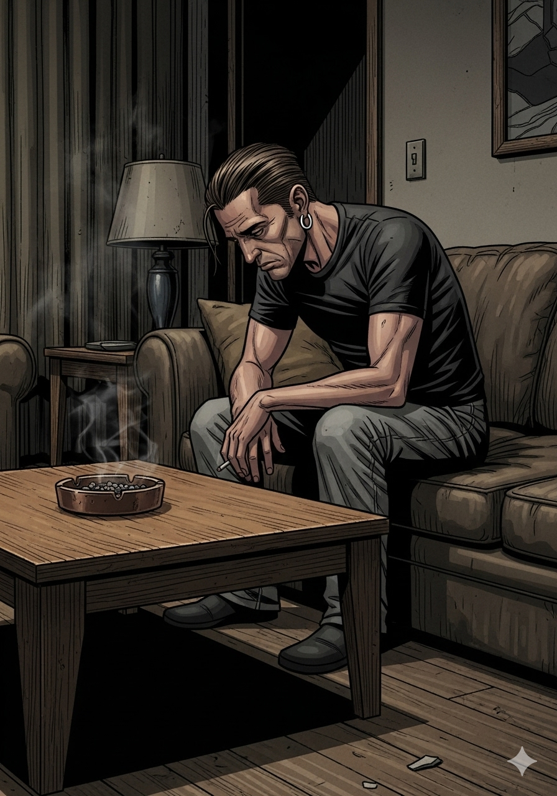

Escena 1 — El pitch

Chicago. Un asesor financiero. Un cartel mexicano. Un lago en Missouri. Todo a la vez.
RULO
"Toni, un asesor financiero de Chicago tiene que lavar 500 millones de dólares del cartel de Navarro. Agarra a su familia y se muda a los Ozarks a montar un casino junto a un lago."
TONI
"¿Y su mujer qué dice?"
RULO
"Su mujer dice: 'Yo también quiero ser jefa del cartel.' Y lo hace mejor que él."
Escena 2 — Los Byrde

Jason Bateman y Laura Linney. La pareja más disfuncional y más adictiva de Netflix.
RULO
"Jason Bateman como Marty Byrde. El tipo que siempre parece a punto de resolver el problema con una hoja de Excel. Frío, calculador, y con una cara de 'esto lo tengo controlado' que no se la cree nadie."
TONI
"¿Y Wendy?"
RULO
"Laura Linney. Wendy empieza como la esposa en crisis y acaba siendo el personaje más peligroso de la pantalla. La evolución más brutal de la serie."
Escena 3 — Ruth Langmore

Ruth Langmore. Tres Emmy. La mejor creación de la serie. Y lo sabe.
RULO
"Julia Garner. Ruth Langmore. Chica local, familia de delincuentes de poca monta, inteligencia brutal y cero filtros. Entra como personaje secundario y se roba cada escena en la que aparece."
TONI
"¿Mejor que los protagonistas?"
RUTH
"Tres Emmy dicen que sí. Y el que ve la serie también."
Escena 4 — Primera temporada

TONI
"Rulo. Llevo cuatro episodios sin parar. No he cenado. He pausado dos veces para ir al baño y me ha costado horrores."
RULO
"Eso es Ozark en la primera temporada. El arranque es de los mejores que ha dado Netflix. Te mete de cabeza y no te suelta."
Empieza muy fuerte. Las presentaciones son brutales. El nivel de adicción: máximo.
¡LAVADO!
— De dinero. Del cartel. De conciencias. Todo a la vez. —
$500.000.000
A lavar. En Missouri. Con un casino flotante. Dios bendiga los Ozarks.
Escena 5 — El reparto

RULO
"Y los secundarios están a la altura. Darlene Snell, Lisa Emery. La matriarca local más impredecible de la televisión. Nunca sabes qué va a hacer. Ni ella."
TONI
"¿Cada uno en su estilo?"
RULO
"Cada uno en su estilo. Eso es lo que hace que el conjunto funcione. No hay personaje de relleno. Todos tienen su peso."
Escena 6 — El declive

TONI
"Rulo... la segunda temporada está bien pero ya no es lo mismo. La tercera también. ¿La cuarta?"
RULO
"Va de más a menos. Pero —y esto es importante— nunca deja de ser adictiva. Nunca llegas a un punto donde digas 'la dejo'. Aflojas el ritmo pero no sueltas."
El síndrome Ozark: sabes que ya no está al nivel de antes, pero sigues. Siempre sigues.
Curva de intensidad — Temporada a temporada
T1 ★★★★★
T2 ★★★★
T3 ★★★½
T4 ★★★
Escena 7 — Siempre adictiva

RULO
"Lo que mantiene la serie aunque baje el nivel es que los personajes nunca decepcionan. Bateman, Linney, Garner. Cuando tienes ese trío en pantalla, el guion puede aflojar que ellos sostienen."
TONI
"Como Breaking Bad pero sin llegar al mismo techo."
RULO
"Exacto. Referencia inevitable. No llega a ese techo. Pero tampoco baja tan bajo."
Escena 8 — Omar Navarro

RULO
"Félix Solís como Omar Navarro. El jefe del cartel. Nunca grita, nunca pierde los nervios. Cuando aparece en pantalla sabes que alguien va a tener un problema muy gordo muy pronto."
TONI
"¿Y los Byrde pueden con él?"
CARTEL
"Pueden sobrevivir. Que no es lo mismo que poder con él."
"Va de más a menos pero nunca
deja de ser adictiva.
Los protagonistas se salen
cada uno en su estilo."
— Pachi. Y así está en el blog.
Escena 9 — El final

TONI
"Rulo. El final. ¿Qué ha pasado? ¿Han corrido tanto que no les ha dado tiempo a cerrar bien?"
RULO
"La última temporada tiene un final que divide. Hay quien lo ve como resolutivo y hay quien lo ve como apresurado. La verdad es que después de cuatro temporadas de tensión acumulada, la resolución se queda corta."
El único punto donde la serie no está a la altura de lo que prometió.
¡CARTEL!
— Navarro manda. Siempre. Aunque no aparezca en pantalla. —
Escena 10 — Aun así

TONI
"Sigo. Aunque el final no me haya convencido del todo, sigo. Porque lo he visto de golpe en cinco días y no me arrepiento de nada."
RULO
"Eso es Ozark. Que el viaje vale más que el destino. La familia Byrde hundiéndose en el barro de los Ozarks temporada a temporada es uno de los retratos más tensos que ha dado la televisión reciente."
Ozark empieza tan fuerte que te deja la mandíbula en el suelo. Y de ahí no se recupera del todo. Pero da igual.
Escena 11 — El veredicto

Cuatro temporadas. Un lago. Millones lavados. Dos colegas con la verdad.
RULO
"Arranque brutal, presentaciones de personajes magistrales, adictiva desde el minuto uno. Va bajando pero nunca suelta. Final algo apresurado. Protagonistas de primer nivel los cuatro años."
TONI
"¿La recomendamos?"
RULO
"Sin dudarlo. Con la advertencia de que el techo está en la primera temporada."
💵 Veredicto de Rulo y Toni 💵
8.0
EMPIEZA COMO UN 10.
TERMINA COMO UN 7.
LA MEDIA ES PERFECTA.
El arranque es de los mejores que ha dado Netflix: personajes presentados con maestría, tensión desde el primer plano,
adicción garantizada. Bateman, Linney y Garner forman un trío que sostiene la serie incluso cuando el guion afloja.
Porque afloja. La última temporada llega apresurada. Pero el viaje —ese descenso familiar en los Ozarks— es
uno de los retratos más oscuros y más enganchosos de la televisión reciente. El final no está a la altura. El resto, sí.
Thriller criminal
Drama familiar
Netflix · 2017–2022
4 temporadas
Jason Bateman
Laura Linney
Julia Garner
3× Emmy Ruth